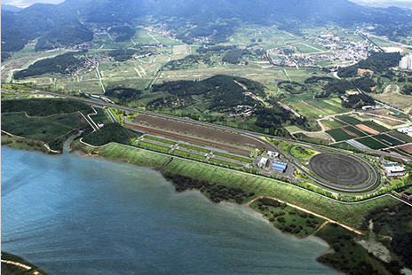

자동차산업
- Home
- 주요산업
- 자동차산업
지능형자동차 상용화 연구기반 구축
사업개요
- 사업기간 : 2010. 6 ˜ 2015. 2
- 사업내용 : 인프라 구축(부품시험장, 자동차부품연구원 대경센터)
기술개발(핵심요소기술, 모듈 및 시스템)
- 총사업비 : 1,691억원(국비 968, 시비 475, 민자 248)
- 사업목표 : 기술수준을 선진국 대비 65 → 95% 향상
- (ITS기반 지능형자동차부품 시험장) 국제표준화기구(ISO)의 규격에 맞는 부품 및 시스템의 신뢰성 시험, 평가, 인증 시험장 구축
- 착공(’10. 11월), ’12년 공정목표 70%, 준공(’13. 2월)

ITS기반 지능형자동차부품 시험장
- 사업기간 : 2007. 8 ~ 2013. 2
- 위치 : 달성군 구지면 일원
- 규모 : 부지 385천㎡, 주행로 178천㎡
- 총사업비 : 975억원(국비355, 시비582, 민자38)
※ 2012년 : 155억원(국비70, 시비80, 민자5)
- 자동차부품연구원 대경센터) 부품시험장 내 건립하여 세계적 트렌드에 부합하는 기술개발 거점역할 수행(’10.6˜’15.2월, 100억원)
- 장비구축(15종), 애로기술 지원, 인력양성 등
- 연구장비 수요조사 및 장비구축(’12.3˜12월), 기업지원
※ 2012년 : 40억원(국비 17, 시비 23)
- (기술개발) 지능형자동차 핵심요소부품, 시스템 기술 등 상용화 기술개발을 완성차업계와 연계하여 추진(’10.6˜’15.2월, 905억원)
- 핵심요소기술, 모듈 및 시스템기술 개발 추진
- 계속과제(12개) 및 신규과제(11개) 평가ㆍ선정(’12.4˜6월)
※ 2012년 : 253억원(국비 195, 민자 58)
자동차부품 지원체계 구축 및 기술개발
- (전략산업진흥) 모듈전장부품 개발, 시험·신뢰성 평가지원을 위한 자동차부품 개발지원 센터 구축(’09˜’12, 78억원)
- 장비구축, 공동기술개발 지원, 애로기술 지원 등
※ 2012년 : 11.6억원(국비 5, 시비 6.5, 민자 0.1) - 미래 자동차산업의 핵심인 전자화 부품개발 및 인력양성 등을 위해 전자화자동차부품RIC운영 지원(’06˜’16, 191억원, 계명대)
- 자동차 ECU* 개발 및 전자화자동차부품 연구개발
※ Electronic Control Unit, 엔진ㆍ자동변속기ㆍABS 따위의 상태를 컴퓨터로 제어하는 전자제어 장치
※ 2010년 : 18.8억원(국비 7억원, 시비 1.4억원, 민자 10.4억원) - 자동차 ECU* 개발 및 전자화자동차부품 연구개발
- 친환경 고효율 그린카로의 패러다임 변화에 대응을 위해 지능형 그린카 파워트레인부품 개발(’11˜’15, 385억원)
- 핵심부품 기반기술개발 3개, 특화센터(연면적 5,135㎡) 및 장비 구축
※ 2012년 : 132.5억원(국비 101, 시비 24 , 민자 7.5) - 광역경제권 연계ㆍ협력사업인 대경 차세대 자동차부품개발 및 기업지원사업 추진(’10˜’13, 135억원)
- 연구개발(4개), 중소기업 맞춤형 지원(제품 상용화, 애로기술, 마케팅 등)
※ 2012년 : 40.7억원(국비 22, 시비 3.4, 경북 6.6, 민자 8.7)
그린카 시범운행
- 녹색성장 선도도시 조성을 위해 연비가 우수하고 CO2 배출량이 적은 하이브리드버스 시범운행(2대)
- EXCO~동대구역~반월당 (1일 8회), 달성2차산단~대곡역 (1일 4회)
- 전기차산업 활성화방안(’09.10) 후속조치로 출고된 순수 전기 자동차 (Blue On)에 대한 실도로 모니터링(1대)